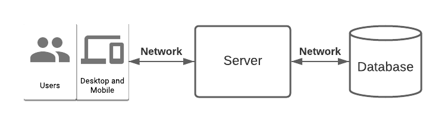

Course Team Project
ECE 366 - Software Engineering & Large Systems Design
Spring 2022, Mondays 6-9pm ET
Prof. Rob Marano (rob@cooper.edu)
The Cooper Union
Project overview
Each group of 3 will work on a single project of their choosing (subject to professor’s approval) for the semester. If your group is having trouble coming up with an idea, I can give you some ideas. Since the focus of this course is large system design, the project should utilize multiple components across the technology stack, integrated and composed to make a cohesive product. The product should be a “minimum viable product” (MVP) that could be released to users and iterated on in the future and can hopefully serve as a project you’re proud to put on your resume.

Some requirements:
- Your project source code must be hosted on GitHub in a single repository in the GitHub organization https://github.com/cooper-ece-366
- Your server component must be written in Java
- Your final project must have a non-command-line user interface (web, mobile, GUI, etc.)
- Your server component in the final project must use a persistent database
- Your project must use some kind of networking (https, tcp, grpc, etc.)
- Your product must allow for user registration, login, and basic profile and account management.
- Your group will have fun learning and working on your projects
- Your project will be challenging but achievable in one semester
Some suggestions for projects:
- A multiplayer game, e.g. Checkers, Scrabble, Reversi, Poker
- A social app, e.g. Twitter, Facebook, Instagram
- A marketplace app with two kinds of users, e.g. Uber, DoorDash, Zillow
- A productivity app, meant for an individual or team, e.g. Google Docs, YNAB, Slack
Ways of working
In order to emulate what working on a software project at a company is like, I’ll be acting as your project manager, engineering manager, stakeholder, user, etc. As you’re working on your projects, please use your professor as a resource as well as your group members and other classmates to ensure timely delivery of each milestone.
Just like at a real software company people copy and refer to each other’s work in an effort to not reinvent the wheel, I expect you to share and reference each other’s work as well as online resources. However, you must give credit whenever you use the work of others.
I’ll hold office hours early in the semester, but as the semester and your projects progress, I’ll schedule weekly sessions (~20 minutes) with each group to address questions, give feedback, help troubleshoot work in progress, resolve any conflicts, and point you in the right direction.
Project Schedule
Proposal
Deliverables:
- proposal doc (no more than 5 pages)
- short presentation (no more than 10 minutes)
Your group must first decide what you’re going to build. You’ll be submitting and presenting a short proposal with a description of your product, the features you intend to implement, a rough breakdown and estimation of effort of those features (scope), and some high level documentation and diagrams about the various components, objects, modules, technology decisions, and so on. You won’t nail this all up front; that’s okay! Plans change. The point is that you’re thinking about how to break down a large problem into chunks and think about how you’ll work together to parallelize and/or swarm on the work together.
Here’s a rough framework:
- Proposal: What are you building? Who’s on your team? What’s your team or company name?
- Scope: What features are MVP? Break these down into tasks and estimate the effort.
- Team: How are you organizing for success? Parallelizing? Pairing/swarming? Both? How will you check in with each other on progress and hold each other accountable?
Agile Demo Days
Every other sprint cycle (1 week)
- Sprint Demo Day Zero on 2022-01-31 - first pass of proposal
- Sprint Demo Day Alpha on 2022-02-14 - final proposal
- Sprint Demo Day Beta on 2022-03-07
- Sprint Demo Day Gamma on 2022-03-28
- Sprint Demo Day Delta on 2022-04-11
- Sprint Demo Day Epsilon on 2022-04-25
- Program Demo Day MVP on 2022-05-02 - FINAL CLASS
Explicitly for Beta demo
<subject to alterations>
Deliverables:
- Code: GitHub repo: prototype of server implementation
- Short writeup
- Demo in class (slides not required)
- Implement a few core features on the server-side only
- I recommend that you start with your core features (e.g. the “todo list”) rather than the user signup/login flow. Feel free to hardcode user info, i.e. you can demo a single user which you’ve defined in memory or use the URL to parameterize which user you’re making requests on behalf of.
- You should implement enough features that you have a compelling demo (~50%). For a “todo list” example, you should be able to create a new list, add items to it, reorder them, mark as complete, and remove items. Basically, “CRUD” and GET/POST/PUT/DELETE operations on your primary domain objects.
- It’s okay if some functionality is missing. I would prefer your group focus on getting comfortable working together by contributing and reviewing code on GitHub. Use this time to get comfortable with IntelliJ and manage your project.
- Some guidance and (strong) suggestions:
- No database required yet (please don’t stand up and use a database yet unless I’ve okayed it with your group because you’re working ahead). Use Java collections to hold things in memory or use a super simple database such as H2 or sqlite3, which holds things in memory or in a single file.
- No user interface required yet (command line demo is required)
- Focus on getting comfortable writing, rewriting, and refactoring code as you’re implementing your features
- Make relatively frequent, small commits that represent units of functionality (e.g. one endpoint). It’s easier to “git stash” (and git stash drop or git stash pop) things that aren’t working when you have a more recent working checkpoint. Think of this a bit like “save points” in video games. Easier to start from a later point than from the beginning when things get tangled and messy.
- Tag @robmarano in pull requests. I’m happy to leave feedback on the code as you’re writing it!
- No unit tests required yet. Write them if you want to and have the time. They often help you write better code and help with debugging, but they take time. Make the assessment with your team. :)
- Tag a “release” in GitHub from the main branch to indicate your submission
- This will allow you to continue development on the main branch
- *Focus on getting the functionality working for your demo. We’ll work on code structure and style, and I expect to give each group feedback on better ways to separate the code. If you and your group have a good idea of breaking up the structure, go for it!
- Hard requirements
- Written in Java
- Uses maven for the build
- Uses Spark Java HTTP framework
- *Implement ~50% of features. Quality over quantity 😉
- How is your application/code structured? Is this working well? What could be working better?
- How are you and your group working together so far? What’s working well? What could be better? How are you checking in and keeping in sync? Any unique challenges?
- Anything you’ve learned along the way that you find particularly useful? Maybe worth sharing with the rest of the class? Could be IntelliJ shortcuts, features of Java or the framework you’re using, an advanced GitHub feature, etc.
- Has anything changed about your project since you submitted your proposal? Why? (Change is okay; I just want it documented :D)
- Command line demo - i.e. “curl”
- You can script it and run one thing at a time, or you can type commands out as you demo.
- Elect a group member to share their screen and run your demo. Everyone should have the opportunity to speak though.
- Give some context on what it is your team is building
- Use diagrams/slides if you want to - not a strict requirement though
- What have you learned? Anything worth sharing with your classmates? Anywhere you or your group are struggling and could use guidance on?
- I strongly encourage knowledge sharing between groups throughout the semester! It’s a great habit at large and growing tech organizations.
Explicitly for Gamma demo
<subject to alterations>
Short writeup
Demo in class (slides not required)
- More focus on code quality and code organization/style
- I recommend the following for code reformatting
- google-java-format for your server
- use js “prettier” plugin in IntelliJ
- Implement at 40-50% of features
- Database
- No in-memory hashmaps anymore! (At least not to store data permanently)
- Make sure your database model is flexible enough for the queries you need to serve various views and writes/updates
- Use MySQL or PostgreSQL for a relational db. If you’re having trouble choosing one, just use MySQL. I think it’s a little easier for beginners to run commands such as “show tables” where for PostgreSQL you have commands like “\d” to remember for listing things out. Don’t spend a lot of time selecting! Flip a coin! Or just use MySQL.
- Some of your features may translate well as key/value, i.e. you can have one column for your primary key and one column for your value - serialized blob/json/etc. You’ll be limited in querying for this, i.e. only by key if you know it in advance
- However, you’ll probably want to have separate fields that you can index on for queries with multiple filters/criteria
- Make sure you use foreign key relationships to link different tables together. For “many-to-many” relationships, you’ll need a “join table” - e.g. a book can have many authors, and authors can write many books
- You would have a Book table and an Author table, but the authors of a book would be in a table BookAuthor, where each record tells you the id of the book and the id of one of the authors.
- e.g. Ethan and Kate wrote Software Engineering
- Book table: (B1 | Software Engineering)
- Author table: (A1 | Ethan), (A2 | Kate)
- BookAuthor table: (A1 | B1), (A2 | B1)
- Basic user interface / frontend implementation (React)
- Prof Lusterman example code uses React/TypeScript, setup using create-react-app
- yarn create react-app coopflix-frontend --template typescript
- pre-req: install yarn
- See notes Supplementary Notes & Useful Links | ECE366 (#Frontend)
- Feel free to use JavaScript, lack of types might make it a bit easier up front
- TypeScript has a bit of a learning curve, but the type safety is nice.
Explicitly for MVP demo
Full Writeup in your repo’s README.md or other markdown documents in the repo
Demo in class (slides not required)
- Implement 100%+ of features (some stretch goals)
- User interface/frontend (styling, stretch: mobile friendly/dynamic resize)
- (stretch) unit tests for the backend and/or deploy your service on a server / container (free cloud or EE lab machines)
- (stretch) Integration test using Docker/testcontainers or similar technology